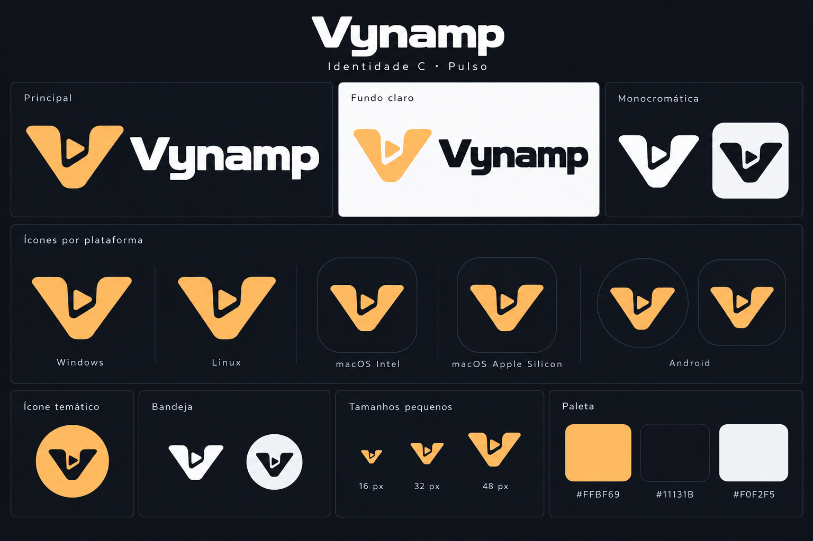

Vynamp / CLASSIC GRAPHITE
Referência de layout e cores para a implementação. Composição clássica inspirada em players de áudio, com geometria, ícones e ilustrações originais. Dados fictícios. Os controles desenhados não reproduzem áudio.
Três módulos: player, equalizador e playlist. Display verde-lima, gabinete grafite, foco ciano e medidores âmbar. Dimensões de referência em DIP; renderer adapta DPI.
Biblioteca expansível, inspector com a cadeia real de áudio e transporte inferior persistente.
Controles essenciais e seek; expandir retorna ao modo anterior sem reiniciar a música.
Perfil phone Android com identidade compartilhada, targets touch, fila e controles nativos. Dados fictícios; saída hi-res ilustrativa, condicionada ao hardware.
Paleta canônica
- background
#11131B - chassis
#252936 - panel-raised
#333A4D - panel-inset
#191D2A - display
#080D0B - border-light
#677086 - border-dark
#090C14 - text-primary
#F1F3F7 - text-secondary
#B8C0CF - text-muted
#8D97AB - lime
#B8F35A - cyan
#66D9EF - amber
#FFBF69 - danger
#FF6B7A - selection
#32453A
Marca aprovada — C / Pulso

Prancha de referência. Exports SVG/ICO/ICNS e recursos Android ainda pendentes. Guia normativo de marca.